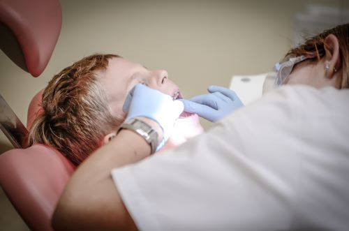

A Dental Desert is a Health Professional Shortage Area (HPSA). It is these areas, not an overall shortage of dentists, that cause limited access to care, argues Dr. Robert A. Faiella,
American Dental Association president.
HPSAs are made up of three kinds of designations: geographic area, population, or facility.
Geographic area: Must have a doctor-to-patient ratio of at least 5,000:1*, be a logical area for a practice, and have dental professionals for the area who are too busy, far away, or inaccessible to the majority of the community.
Population: Residents must reside in an area that would be fit to house a practice, have access barriers, and have a doctor-to-patient-ratio of 4,000:1. (Members of Federally recognized Native American tribes are automatically a designated population HPSA group.)
Facilities: Must be a federal or state correctional facility that has more than 250 inmates with a doctor-to-patient ratio of 1,500:1 or a public or non-profit dental facility that provides care to an HPSA group but is unable to meet the needs of the community.
Young Child Receiving Care

The following map provides a Dental Shortage score by county across the United States.
Lack of Access to Care
Solutions
No one has a comprehensive fix for the system just yet. But some states are weighing a way to broaden care without adding dentists, by training a new class of dental-care providers called “dental therapists.” They don’t have as many skills as dentists, but can perform basic procedures.
To deal with the shortage, Fort Hays State University President Ed Hammond backs the idea of creating a mid-level dental provider — a person whose training and skills fall somewhere between those of a hygienist and a full-fledged dentist.